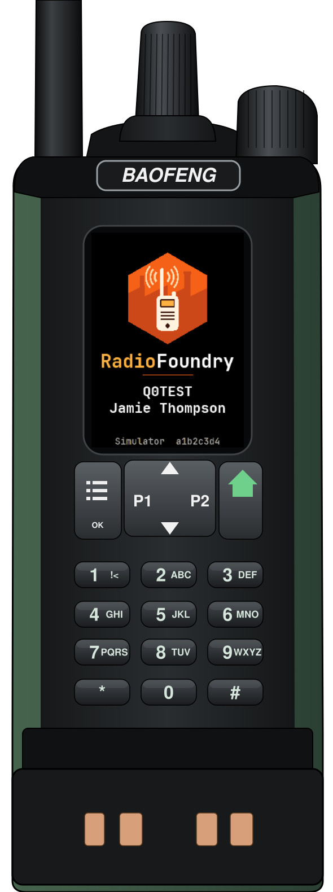

Baofeng DM-32UV
Program your DM-32UV
Install NXDN-P25-DM32 firmware and edit your codeplug directly in the browser. Your radio data and backups stay on your computer.
Needs Chrome or Edge on a desktop computer (Web Serial) and the radio's programming cable.

Firmware served by this flasher
NXDN-P25-DM32 2026.11.23-e766cc52
Radio tools
Radio modes
- YSFC4FM voice in V/D-1, DN and VW
- NXDNConventional digital voice
- P25Conventional voice and trunking
- DMRDigital voice, contacts and talkgroups
- FMAnalog voice
- AMAirband reception
DM-32UV update mode
- Switch the radio off and connect the programming cable to the computer.
- Hold PTT and SK1 while you switch the radio on.
- A green LED means the radio is in update mode.
The flasher tells you what to do with the radio at each step. Usually switching it off and on when asked is enough; update mode is the factory loader's fallback route.
Where the AMBE codec comes from
This site only hosts the firmware image without the AMBE codec (proprietary to DVSI). The flasher takes the codec from your radio's memory (read during the backup) or from the original Baofeng firmware file you pick, and merges it with the image inside the browser. The codec is never uploaded to any server or distributed here.
Experimental firmware. Keep the recovery backup the flasher offers. YSF voice changes have been tested in software and still need an on-air check.
Credits
- RadioFoundry — the original web flasher and codeplug editor (MIT, The RadioFoundry Authors).
- Open25-DM32 — the firmware base (GPL-3.0).
- DM32-nxdn-p25 (lyra XE1POC) — the P25 and NXDN derivative, and this adaptation of the site.